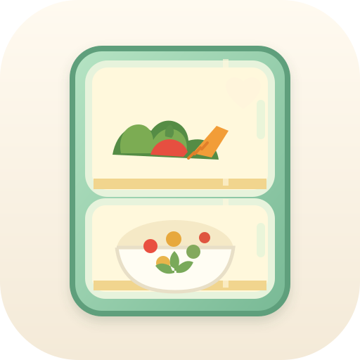

Разнообразное меню, которое удобно готовить заранееОбщие блюда для пары, которая начала тренироваться. Каждый день — полноценный завтрак, обед, ужин и перекусы по голоду. С учётом грудного вскармливания, без намеренного ограничения калорий.
Рецепты дня
Порции, клетчатка и грудное вскармливание
Не делите порции только по полу. Рост, вес, аппетит, тренировки и объём кормлений важнее. Это бытовое меню, а не расчёт индивидуальных калорий и БЖУ. Оно не гарантирует покрытие всех потребностей без подбора порций.
- Стартовая порция обеда или ужина: 120–180 г готовой птицы/мяса; 150–200 г готовой крупы или 200–300 г картофеля; 200–300 г овощей; немного растительного масла или соуса. Это ориентир для сборки тарелки, а не верхний предел.
- Если основа — бобовые: 150–200 г готовых бобовых на человека, крупа и предусмотренные в меню яйцо, йогурт или сыр. Если бобовые пока непривычны, начните с нескольких ложек, дополняя блюдо птицей или яйцами.
- Если голодно или была тяжёлая тренировка: увеличьте гарнир, добавьте хлеб, фрукт или перекус. Не убирайте углеводы из ужина только потому, что он вечерний.
- При ГВ: потребность в энергии обычно выше примерно на 330–400 ккал относительно питания до беременности, но зависит от активности и кормлений. Не назначайте девушке автоматически меньшую порцию. Дополнительный перекус может быть удобен. Обычно исключать капусту, бобовые, ягоды или молочные продукты «на всякий случай» не нужно. При подтверждённой аллергии рацион меняют индивидуально. Источник: CDC.
- Рыба: в плане два рыбных ужина в каждую полную неделю; консервированная и солёная рыба тоже входят в это количество. При ГВ выбирайте разные виды с низким содержанием ртути. Лосось/горбуша, сардины, сельдь и атлантическая скумбрия входят в список FDA «Best Choices»; королевская макрель (king mackerel) — другой вид, её исключают. По рекомендации NHS при ГВ — не более двух порций жирной рыбы в неделю. Рыбные замены ниже используйте вместо запланированного блюда, а не дополнительно. FDA/EPA, NHS.
- Клетчатка: ориентир — около 30 г в сутки, увеличивать постепенно. Ежедневно предусмотрите овощи к обеду и ужину, 2 порции фруктов, овсянку/цельнозерновой хлеб/крупы; регулярно — бобовые, орехи и семена. Фактическое количество зависит от ваших порций. Пейте по жажде. Источник: NHS.
- Источники важных нутриентов: яйца, рыба, мясо, молочные продукты, бобовые и зелень чередуются в течение месяца. Используйте йодированную соль вместо обычной в привычном небольшом количестве. Необходимость добавок при ГВ, в том числе йода и витамина D, обсудите с врачом; меню не заменяет такую оценку. CDC.
Перекусы: каждый выбирает 1–2 по голоду
Йогурт 150–200 г + фрукт; кефир 250 мл + цельнозерновой тост; творог 150 г + ягоды; яблоко/груша + 20–30 г орехов; хумус 50–70 г + хлеб и овощи. Для более сытного дополнительного приёма пищи: йогурт + банан + орехи. После тренировки можно просто съесть ближайший обычный приём пищи.
Обеды и ужины: 13 готовок на месяц
Блок на 3 дня = по 6 порций каждого блюда; на 2 дня = по 4. Обычно обед и ужин внутри блока повторяются. В блоках 11–12 и 18–19 меняется только рыба, а гарниры готовятся сразу на два дня. Можно менять подачу и овощи, не готовя новую основу. Время ниже — ориентир активной работы на оба блюда; духовка и тушение могут занимать ещё 30–70 минут.
| Дни | Обед | Ужин | Что приготовить заранее |
|---|---|---|---|
| 1–3 | Тефтели из индейки в томатном соусе, гречка; салат — выбор по дням в отдельной категории. | Густое рагу из красной чечевицы, тыквы и томатов; цельнозерновой хлеб, натуральный йогурт. | Тефтели и рагу — по 6 порций. Гречка — 6 порций. Капусту нашинковать, заправлять перед едой. 40–50 мин. |
| 4–5 | Курица с булгуром, запечёнными кабачками и морковью; соус из йогурта. | Запечённый лосось или форель, картофель в кожуре; салат — выбор по дням в отдельной категории. | По 4 порции. Рыбу и курицу готовить в отдельных формах. Салат с рукколой собирать перед едой. 30–40 мин на основные блюда и 5 мин на салат. |
| 6–7 | Болоньезе из говядины и чечевицы, цельнозерновые макароны; салат — выбор по дням в отдельной категории. | Домашняя шаурма: запечённая курица, капуста, морковь, огурец, йогуртовый соус, лаваш. | Соус и курицу — по 4 порции. Лаваш сворачивать перед едой. Макароны сварить на 2 дня или по 10 мин свежие. 35–45 мин. |
| 8–10 | Куриные сердечки с морковью и грибами, перловка; салат — выбор по дням в отдельной категории. | Мягкий чили из индейки и красной фасоли с томатами; булгур, зелень. | Оба блюда — по 6 порций. Фасоль консервированная, промытая. Перловку можно замочить на ночь. 45–55 мин активной работы; сердечки тушатся 60–70 мин или до мягкости. |
| 11–12 | Котлеты из индейки с кабачком, гречка; салат — выбор по дням в отдельной категории. | День 11: дорадо или сибас, запечённые с лимоном, картофель и зелёная фасоль. День 12: салат из консервированных сардин, картофеля, фасоли и огурца. | Котлеты и гарниры — на 4 порции; дорадо/сибас — на 2 порции на день 11. Сардины открыть в день 12, салат собрать за 5 минут. Рыбу и котлеты запечь в отдельных формах. 35–45 мин. |
| 13–14 | Куриный суп с белой фасолью и овощами; цельнозерновой хлеб. | Тёплая тарелка: нут, запечённая тыква, булгур, яйцо и йогуртовый соус; салат — выбор по дням в отдельной категории. | Суп и основу тарелки — по 4 порции. Яйца сварить на 2 дня. Нут взять готовый. 30–40 мин. |
| 15–17 | Ленивые голубцы с индейкой, капустой и бурым рисом; йогурт, свежие овощи. | Куриные бёдра без кожи с картофелем и морковью; салат — выбор по дням в отдельной категории. | По 6 порций. Голубцы запечь в форме или тушить; курицу — на отдельном противне. Рис сразу использовать в голубцах. 45–55 мин. |
| 18–19 | Тёплый салат из чечевицы, запечённой курицы, моркови и кабачка; цельнозерновой хлеб. | День 18: запечённая атлантическая скумбрия с картофелем. День 19: солёная сельдь с картофелем и яйцом.; салат — выбор по дням в отдельной категории. | Обед и картофель со свёклой — на 4 порции; скумбрию — на 2 порции. На день 19 заранее сварить яйца; сельдь открыть перед едой. На человека 60–80 г филе сельди + 1 яйцо, гарнир по аппетиту. 30–40 мин. |
| 20–21 | Мягкое карри из курицы и нута с томатами, булгур, огурец. | Фриттата с кабачком, горошком и сыром, печёный картофель; салат — выбор по дням в отдельной категории. | Карри и фриттату — по 4 порции. Пряности по вкусу; острый соус можно добавить отдельно. 35–45 мин. |
| 22–24 | Курица с гречкой и грибами в духовке; салат — выбор по дням в отдельной категории. | Густой суп из чечевицы, моркови и томатов; тост с сыром, свежие овощи. | По 6 порций. Суп можно измельчить частично. Хлеб держать в морозилке ломтиками. 35–45 мин. |
| 25–26 | Тефтели из индейки, цельнозерновой кускус, запечённые кабачки и морковь. | Рыбные котлеты из консервированной горбуши, картофельно-морковное пюре; салат — выбор по дням в отдельной категории. | По 4 порции. Кускус залить кипятком по инструкции; рыбные котлеты запечь одновременно с тефтелями в отдельных формах. 35–45 мин. |
| 27–28 | Куриные желудочки с белой фасолью, морковью и томатами, булгур; салат — выбор по дням в отдельной категории. | Домашние бургеры с куриной котлетой, цельнозерновой булочкой, рукколой и томатом; запечённые овощи. | По 4 порции. Желудочки отварить 60–90 мин и потушить с овощами 20–30 мин; можно использовать заранее отваренные и замороженные. Бургеры собирать перед едой. 45–55 мин активной работы на оба блюда. |
| 29–30 | Индейка с овощами и цельнозерновыми макаронами в томатном соусе; салат — выбор по дням в отдельной категории. | Чечевично-овощное рагу, яйцо, ложка йогурта и цельнозерновой хлеб. | По 4 порции. Можно использовать заранее замороженные тефтели вместо свежей индейки. 30–40 мин. |
Ежедневно предусмотрен один салат на двоих: прежние простые варианты и новые с зеленью можно чередовать. В категории «Салаты» выберите салат на нужный день — список покупок пересчитается автоматически.
Ежедневно предусмотрен один салат на двоих: прежние простые варианты и новые с зеленью можно чередовать. В категории «Салаты» выберите салат на нужный день — список покупок пересчитается автоматически.
Для месяца из 31 дня повторите любой день, используя свежую еду или своевременно замороженную порцию.
30 сытных завтраков
Время — утренняя работа при готовых заготовках. Каждый завтрак указан на одного: приготовьте две порции и скорректируйте объём по аппетиту. Овсянка, творог, яйца и йогурт чередуются; одними фруктами или кофе завтрак не заменяется.
| День | Завтрак для каждого | Утром / с вечера |
|---|---|---|
| 1 | Ночная овсянка с йогуртом, яблоком и грецкими орехами. | 2 мин / смешать основу вечером. |
| 2 | Творожная запеканка, ягоды и йогурт. | 3–5 мин / запечь заранее. |
| 3 | 2 яйца, 2 цельнозерновых тоста, помидор и огурец. | 7–10 мин / овощи вымыть. |
| 4 | Овсянка на молоке, банан, ложка арахисовой пасты; натуральный йогурт. | 7 мин / отмерить хлопья. |
| 5 | 2 яичных маффина, цельнозерновой хлеб, овощи. | 3–5 мин / испечь маффины. |
| 6 | Творог 150–200 г, груша, орехи, 1–2 тоста. | 5 мин / ничего. |
| 7 | Овсяноблин с сыром и томатом; яблоко. | 10 мин / отмерить хлопья. |
| 8 | Ночная овсянка с йогуртом, ягодами и семенами чиа. | 2 мин / замочить вечером. |
| 9 | Сырники из заготовки, йогурт, груша. | 5–8 мин / разморозить готовые сырники в холодильнике. |
| 10 | 2 яичных маффина, тосты, огурец. | 3–5 мин / разморозить маффины. |
| 11 | Густой йогурт 200 г, овсяные хлопья 40–50 г, банан и орехи. | 3 мин / хлопья замочить в йогурте. |
| 12 | Гречка на молоке, творог 100–150 г, яблоко с корицей. | 5 мин / оставить отдельную порцию гречки с предыдущей готовки. |
| 13 | Цельнозерновые тосты, 2 яйца, авокадо или хумус, томат. | 7–10 мин / можно заранее сварить яйца. |
| 14 | Творожная запеканка с грушей, йогурт. | 3–5 мин / запечь или разморозить. |
| 15 | Ночная овсянка с яблоком, корицей и йогуртом. | 2 мин / смешать вечером. |
| 16 | Ролл в лаваше с омлетом, сыром и овощами. | 8–10 мин / натереть сыр, вымыть овощи. |
| 17 | Сырники, ягоды, йогурт. | 5–8 мин / разморозить готовую порцию. |
| 18 | Пшённая каша с тыквой на молоке, творог 100 г. | 5 мин / сварить кашу вечером на 2 завтрака. |
| 19 | Та же пшённая каша, груша, грецкие орехи и густой йогурт. | 5 мин / разогреть свою порцию. |
| 20 | Тосты с хумусом, 2 яйца и огурец. | 7–10 мин / можно сварить яйца заранее. |
| 21 | Овсяноблин с творогом и ягодами. | 10 мин / ягоды разморозить в холодильнике. |
| 22 | Ночная овсянка с бананом, йогуртом и арахисовой пастой. | 2 мин / смешать вечером, банан добавить утром. |
| 23 | Творожная запеканка с яблоком, йогурт. | 3–5 мин / запечь заранее. |
| 24 | 2 яичных маффина, тосты и овощи. | 3–5 мин / разморозить готовые маффины. |
| 25 | Густой йогурт, замоченные овсяные хлопья, груша, орехи. | 3 мин / замочить хлопья вечером. |
| 26 | Сырники, банан и йогурт. | 5–8 мин / разморозить готовые сырники. |
| 27 | Овсянка на молоке с яблоком; творог 100–150 г. | 7 мин / отмерить хлопья. |
| 28 | Омлет с горошком, сыром и зеленью; тосты. | 10 мин / использовать замороженный горошек. |
| 29 | Ночная овсянка с ягодами и йогуртом. | 2 мин / смешать вечером. |
| 30 | Творог 150–200 г, банан, орехи и цельнозерновые тосты. | 5 мин / ничего. |
Сохранения между устройствами
Войдите с одним и тем же email на телефоне и компьютере: галочки, порции, перекусы и выбранные салаты будут общими. Без входа меню работает с локальными сохранениями.
Сейчас вход доступен по email владельца проекта Supabase. Откройте ссылку из письма на нужном устройстве. Для других email потребуется настроить отправку писем в Supabase.
Войти внутри установленного приложения
Если письмо открывает браузер вместо приложения, скопируйте адрес кнопки входа из письма и вставьте сюда. Ссылка одноразовая — никому её не передавайте.
Проверяем подключение…
Без интернета изменения остаются на устройстве и отправятся при подключении. При изменении одной позиции на двух устройствах действует последнее отправленное изменение.
Подробные рецепты
Все количества — на двоих: завтрак на одно утро, салат на один день, обед и ужин на весь указанный блок. В карточках учтены гарниры, соусы и овощи. Мясо указано без костей, крупы — сухие, овощи — в подготовленном виде, консервы — без жидкости. Для покупки овощей обычно удобно округлять вес немного вверх. Числа в пошаговом описании относятся к обычным порциям; при увеличении порций ориентируйтесь на обновлённый список ингредиентов и пропорционально увеличивайте воду.
Салаты — отдельная категория
Здесь сохранены и прежние простые салаты, и новые варианты с зеленью. Каждый рецепт рассчитан на двоих на один день. В меню уже распределён один салат в день; его можно заменить любым из этой категории. Покупки учитывают только выбранные варианты.
Сытные салаты, которые уже служат обедом или ужином
Эти блюда сохранены в основном меню и посчитаны в покупках целиком: картофельный салат с сардинами — день 12 и тёплый салат из чечевицы, курицы и овощей — дни 18–19. Их не нужно добавлять как ещё один гарнир.
Интерактивный список покупок
Три непересекающихся списка. «Месяц» — весь запас круп, консервов, масла, орехов и заморозки. «Неделя» — мясо, рыба, яйца, творог, сыр и овощи для готовки. «День» — хлеб, молоко, йогурт, сметана, свежая зелень, фрукты и овощи для свежей подачи: показан расход на выбранный день, а не требование ходить в магазин ежедневно.
В дневном разделе можно собрать расходники сразу на неделю. Перед готовкой партии берите молоко, йогурт и другие расходники на весь блок из 2–3 дней. Недельную закупку свежего мяса и рыбы сразу разделите: для ближайшей готовки — в холодильник, для более поздних дней — в морозилку, с размораживанием в холодильнике накануне. Скоропортящиеся продукты покупайте с подходящим сроком годности или докупайте в середине недели.
| Куплено / уже есть | Количество | Для каких блюд |
|---|
Всё в этом списке отмечено. Снимите «Скрыть отмеченное», чтобы увидеть продукты.
Галочки сохраняются в этом браузере, если доступно локальное хранилище. Это не учёт остатков: отметка означает «эта закупка закрыта». При увеличении порций или добавлении перекусов увеличившиеся позиции снова становятся неотмеченными. Для синхронизации между устройствами войдите в аккаунт в разделе сохранений.
Что заморозить и как хранить
- Холодильник — не выше 4 °C. Готовую еду распределяйте в небольшие неглубокие контейнеры и убирайте в холодильник в течение 2 часов; не ждите полного остывания большой кастрюли на столе. Большинство приготовленных остатков хранится 3–4 дня; этот план использует более короткие блоки по 2–3 дня.
- Замораживайте заранее: тефтели, котлеты, готовые сырники, запеканку порциями, маффины, чечевичное рагу, болоньезе и хлеб. Порции, предназначенные на следующую неделю, заморозьте в день приготовления после быстрого охлаждения. Подпишите дату; для удобства используйте в течение месяца.
- Размораживайте в холодильнике с вечера или в микроволновке непосредственно перед разогревом. Разогревайте порцию до горячего состояния по всей толщине, ориентир 74 °C. Не грейте ежедневно всю кастрюлю.
- Салаты и соусы: храните отдельно, заправляйте перед едой. Огурцы и томаты удобнее нарезать в день подачи. Ночную овсянку готовьте на ближайшее утро; при желании — максимум на два утра при постоянном охлаждении.
- Заморозка не исправляет нарушение хранения. Не оставляйте рис, каши, мясо или молочные завтраки на столе на ночь.
Правила охлаждения, хранения и разогрева: FoodSafety.gov, USDA: Leftovers and Food Safety. Температуры готовности: FoodSafety.gov.
Красный окунь, дорадо, сибас и рыбные консервы
Дорадо и сибас добавлены на день 11 — выбирайте одну из этих рыб, а в следующем месяце поменяйте. Красную рыбу оставили на дни 4–5 и в виде консервированной горбуши на дни 25–26. Скумбрия — на день 18, солёная сельдь — на день 19. Сардины на день 12 и горбуша в котлетах дают два удобных варианта консервов.
Красный морской окунь — ещё одна замена для запекания с тем же гарниром. Для кормящей сначала уточните точный вид на этикетке: торговое название «красный окунь» неоднозначно. В таблице FDA ocean perch и rockfish относятся к разным категориям. Если это rockfish, рекомендация FDA — одна порция около 115 г до приготовления и никакой другой рыбы в эту неделю; второй рыбный ужин тогда замените индейкой. Если вид не удаётся определить, для девушки выберите горбушу или сардины, а окуня можно приготовить парню. Пояснения FDA.
Солёная сельдь: в меню небольшая порция 60–80 г филе на человека, дополненная яйцом и гарниром. Это размер порции для блюда, а не специальный медицинский предел. Выбирайте готовый продукт с понятным сроком годности; картофель и овощи к нему не досаливайте. Открытые консервы и сельдь храните по инструкции производителя в холодильнике; для этого меню удобнее открывать упаковку на один приём пищи.
Простые замены и разнообразие
Индейку можно заменить курицей; дорогой лосось — горбушей или форелью, чередуя виды. Булгур — гречкой; свежие овощи — замороженными. Йогуртовый соус меняйте: укроп с лимоном или чеснок по вкусу. Любимый десерт тоже может быть частью питания: не нужно компенсировать его пропуском еды. Печени, болгарского перца, кинзы, брокколи, цветной капусты, петрушки и минтая в плане нет.